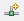
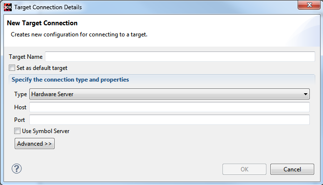

You can configure the remote target details by adding a new connection in the Target Connections
view.
To create new target connection:
In the Target Connections window of the SDK interface, click the Add
Target Connection button.

The Target Connection Details dialog box opens.

In the Target Name field, type a name for the new remote connection.
Check the Set as default target checkbox to set this target as default. SDK uses the
default target for all the future interactions with the board.
In the Host field, type the name or IP address of the remote host machine. This is the
machine that is connected to the target and hw_server is running.
In the Port field, type the port number on which hw_server is running. By default,
hw_server runs on port 3121.
Select Use Symbol Server, if the hardware server is running on a remote
host.